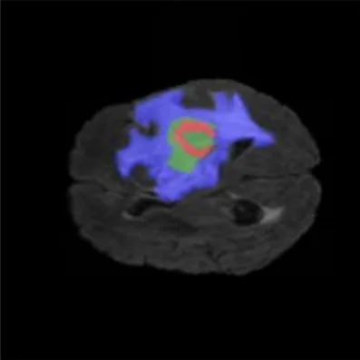
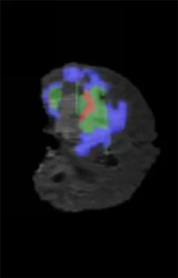
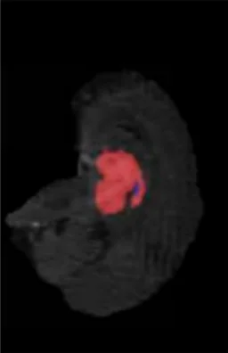
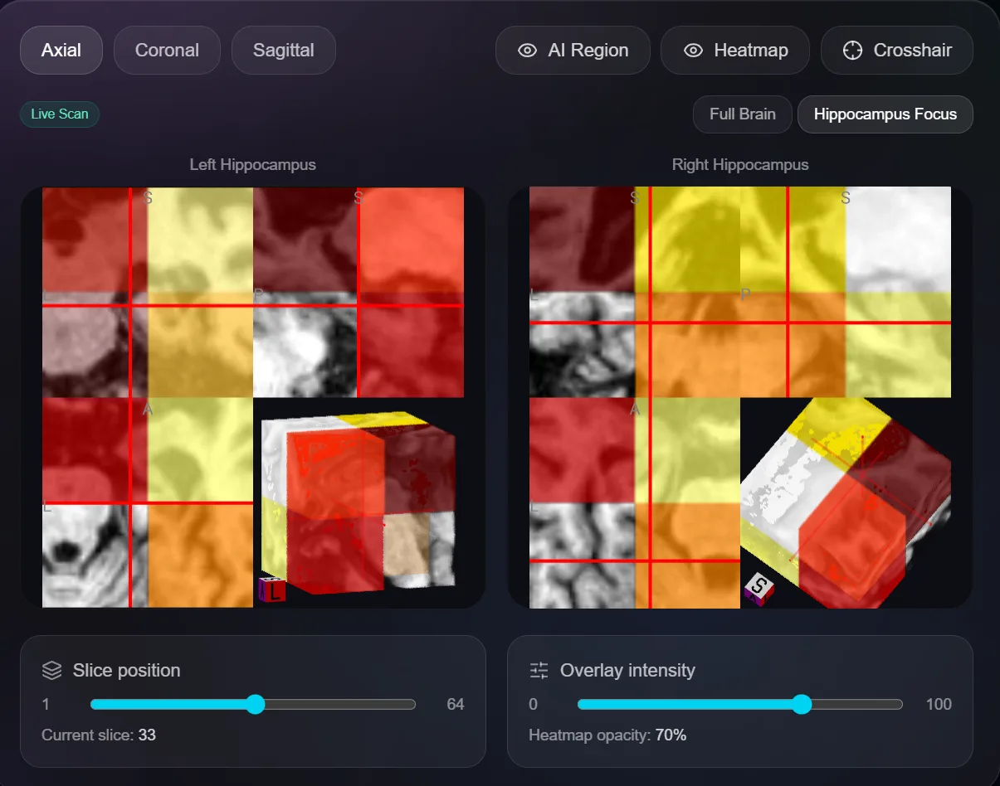
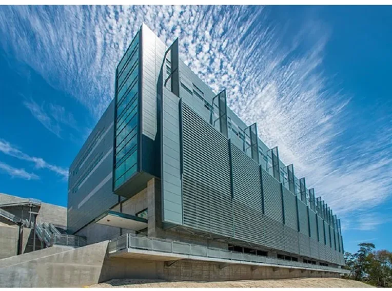
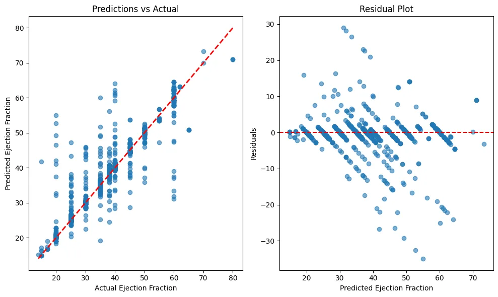

Fifteen AI projects from our undergraduate and graduate students: hospitals, power grids, airlines, forests and the brain.
Undergraduates co-author peer-review submissions with faculty, from MRI and EEG analysis to FPGA accelerators and climate tools.
Graduate students take on problems from the region's grids, hospitals, airlines and supply chains with agents, reinforcement learning and LLMs.
Every EV charger in a simulated Dubai acts as an agent. A shared policy (MAPPO) teaches them to throttle, defer or redirect cars so queues and grid stress fall together.
A 2.5D U-Net reads four MRI sequences together, outlines necrotic core, edema and enhancing tumour, rebuilds the volume in mm³ and estimates survival. It runs as one deployable service.



Long footage overwhelms vision-language models. This thesis drops idle frames, lets a Mamba state-space model remember events across hours, then lets you ask in plain language what happened and when.
Did anyone enter the classroom?
The hippocampus is extracted from a 3-D MRI and streamed into a custom FPGA accelerator that computes texture features in 1.3 seconds. A cascade of models then explains each diagnosis with SHAP. Nothing is sent to the cloud.

A spectral-flatness detector reads only the power curve, decides the sky regime and sends each sample to a specialist model. Tested on five Gulf solar plants (75–150 MW) and NREL Golden.
Symbolic regression and the principle of maximum entropy, run independently, arrive at the same closed-form curve in serum creatinine. A doctor in a resource-limited clinic can read it at a glance.
Earlier recursive solvers looked a puzzle up by its ID; give them a blank ID and they score zero. Here the demonstrations are written into a Titans neural memory at test time, and that memory steers a small network that refines its answer up to 16 times.
Riemannian brain-signal features detect mind-wandering while people watch video. During reading they fall to chance. The paper shows that a common evaluation shortcut had been inflating published results.
Every week, for every supplier: what to order and whether to send it by sea, road or air. LLM agents read the mailbox and brief the buyer, and an optimiser plans eight weeks ahead. Every figure an agent states traces back to the planner.
Delays through Suez: +10 days lead time on European lanes.
Three fixation detectors disagree five-fold on what the eyes did, yet screening accuracy barely moves. One warning: reading time alone, measured with a stopwatch, already scores 0.92.
Gradient-boosted models forecast tomorrow's occupancy for each office, the HVAC is scheduled to match, and the energy and comfort cost of every forecast error is measured on real data from two buildings.

Six model families are benchmarked for calibrated, explainable risk, then served through an app with one view for clinicians and one for patients. A Gemini assistant answers patient questions, held in check by SHAP, consistency checks and human review.

Retrieval-augmented generation reads de-identified pediatric reports and pulls out the diagnosis, the treatment requested abroad and its justification, each linked to its source line. Physicians validate it and the committee decides.
src · p.3 ¶2
src · p.11 ¶4
src · p.17 ¶1
YOLOv8 identifies tree species in photos, because how much carbon a forest stores depends on which trees it holds. The full toolset adds sequestration estimates, deforestation mapping and a blockchain platform for trading credits.
A profiler learns how you travel, a value estimator prices every reward, a recommender picks three and says why, and an orchestrator keeps each member's data separate. Requests that try to reach someone else's account are blocked.
Research with faculty from your first years: hardware, medical AI, climate.
Machine learning · deep learning · generative AI · automation & IoT · industrial case studies.
youvenz.github.io/aud-ai-festival/activities